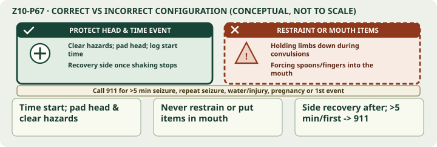

Z10-P67 · Wilderness medicine · New manuscript
Protect a person during a seizure without restraining limbs or entering the mouth
Prevent head and airway injury during a convulsive seizure while knowing exact timing and 911 activation triggers.
When it applies · Witnessed generalized tonic-clonic seizure outdoors or during an emergency.
Equipment · Soft jacket/pad for head cushioning, watch to time seizure duration, and 911 access.

Actions
- Stay calm, note the EXACT start time on a watch, clear hard rocks, fire pits, water edges, or sharp gear away from the person, and place a soft folded jacket beneath their head.[T01, M20]
- NEVER hold the person down, restrain jerking limbs, or put fingers, spoons, wallets, or sticks into their mouth (people cannot swallow their tongues, and forcing objects breaks teeth and blocks airways).[M04, M20]
- Once shaking stops, check normal breathing and gently roll the person onto their side in the recovery position to keep the airway clear while monitoring them until fully awake; call 911 immediately if a seizure lasts over 5 minutes, repeats, occurs in water, involves injury/pregnancy/diabetes, or is a first-ever seizure.[M22, T02]
Failure recognition · Trying to pry open a seizing person's jaw with a stick or failing to time the seizure duration for arriving EMS.[M04, M20]
Verify · Confirm exact seizure duration recorded, surroundings cleared, post-seizure side-lying airway check performed, and 911 rules applied.[M22, M20]
Stop or change course · Seizure exceeding 5 minutes, back-to-back seizures, breathing failure after shaking stops, or head/water injury demands immediate 911 response.[T02, M03]
Evidence and editorial notes
- M03 · American Red Cross · CPR Steps and Emergency Response (current web edition)
- Section: Check, Call, Care; Unresponsive Person Without Normal Breathing · Conditions: Unresponsive person not breathing normally; lay responder with EMS activation
Support: Verify scene safety, check responsiveness and normal breathing, call 911 and retrieve an AED if available, and begin dispatcher-guided or trained CPR.
Limitations: Lay text reference cannot substitute for hands-on certified CPR/AED training. · Conflicting evidence: None; aligns with AHA/ARC bystander guidance.
Editorial note: Distinguishes lay activation and dispatcher-guided CPR from advanced life support. · Specialist reviewer: EMS and resuscitation specialist
Primary source · checked 2026-11-24 - M04 · NIH / MedlinePlus · Choking (current web edition)
- Section: Recognizing Severe Airway Obstruction and Emergency Escalation · Conditions: Conscious or unresponsive person with severe choking
Support: Encourage forceful coughing if the person can cough or speak; activate 911 immediately for silent inability to breathe or speak and follow trained/dispatcher-guided airway-clearing care.
Limitations: Blind finger sweeps can lodge obstructions deeper into the airway. · Conflicting evidence: None; aligns with ARC choking guidance.
Editorial note: Keeps airway maneuvers bounded by formal training and 911 dispatcher guidance. · Specialist reviewer: EMS and emergency medicine
Primary source · checked 2026-11-24 - M20 · NIH / MedlinePlus · First Aid Overview (current web edition)
- Section: Lay First-Aid Scope, Kit Readiness, and Documentation · Conditions: Pre-trip kit preparation and remote patient monitoring
Support: Maintain an inspected, unexpired first-aid kit matched to your actual training, keep written patient observations (time, responsiveness, breathing, symptoms, interventions) for EMS handoff, and practice skills in certified courses.
Limitations: Carrying advanced medical instruments without clinical training adds risk rather than capability. · Conflicting evidence: None; aligns with ARC and NPS-K.
Editorial note: Anchors kit sizing, SOAP-style lay observation logs, and scope-of-practice cards. · Specialist reviewer: Wilderness EMS and clinical education
Primary source · checked 2026-11-24 - M22 · American Red Cross · First Aid Steps (current web edition)
- Section: First Aid Steps > Patient Monitoring, Recovery Position, and EMS Handoff · Conditions: Breathing unresponsive patient without suspected spinal injury awaiting EMS
Support: Place an unresponsive but normally breathing patient with no suspected spinal trauma onto their side in a stable recovery position to protect the airway while continuously rechecking breathing until EMS takes over.
Limitations: Do not move a patient with suspected spinal trauma unless immediate scene danger or airway obstruction requires it. · Conflicting evidence: None; aligns with ARC/AHA lay positioning.
Editorial note: Anchors airway-protection positioning and handoff documentation. · Specialist reviewer: EMS and emergency medicine
Primary source · checked 2026-11-24 - T01 · American Red Cross · First Aid Steps (current web edition)
- Section: First Aid Steps > Check the scene; check the person · Conditions: Lay responder in United States; assess safety before contact
Support: Check scene safety, responsiveness, breathing and immediately life-threatening conditions.
Limitations: Lay guidance does not replace advanced clinical or rescue protocols. · Conflicting evidence: None; universal first-response opening gate.
Editorial note: Anchors scene-safety-first rule across Z01. · Specialist reviewer: EMS and wilderness medicine
Primary source · checked 2026-11-24 - T02 · American Red Cross · First Aid Steps (current web edition)
- Section: First Aid Steps > Call 9-1-1 · Conditions: Lay emergency response to unresponsiveness, abnormal breathing or severe bleeding
Support: Activate EMS and get needed equipment. Follow dispatcher directions and act within training.
Limitations: Remote locations may delay EMS arrival, requiring sustained stabilization after activation. · Conflicting evidence: None; aligns with NPS-E.
Editorial note: Mandates early emergency activation and dispatcher adherence. · Specialist reviewer: EMS and wilderness medicine
Primary source · checked 2026-11-24
Source lineage · American Red Cross and NIH MedlinePlus First Aid; new manuscript · Classification · New manuscript.